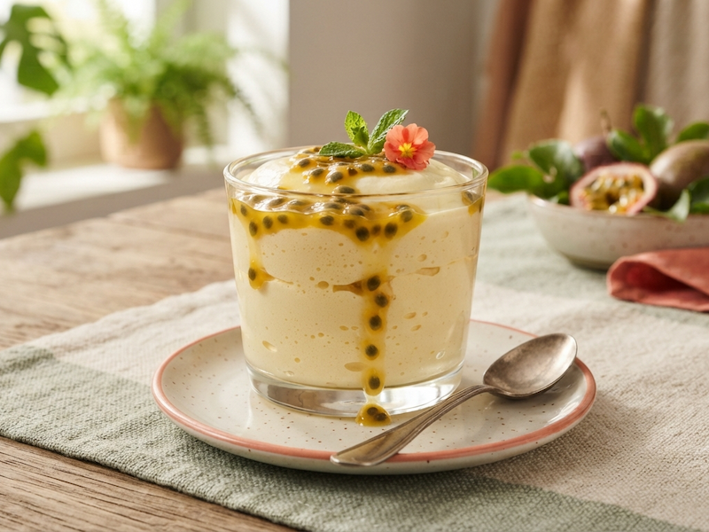
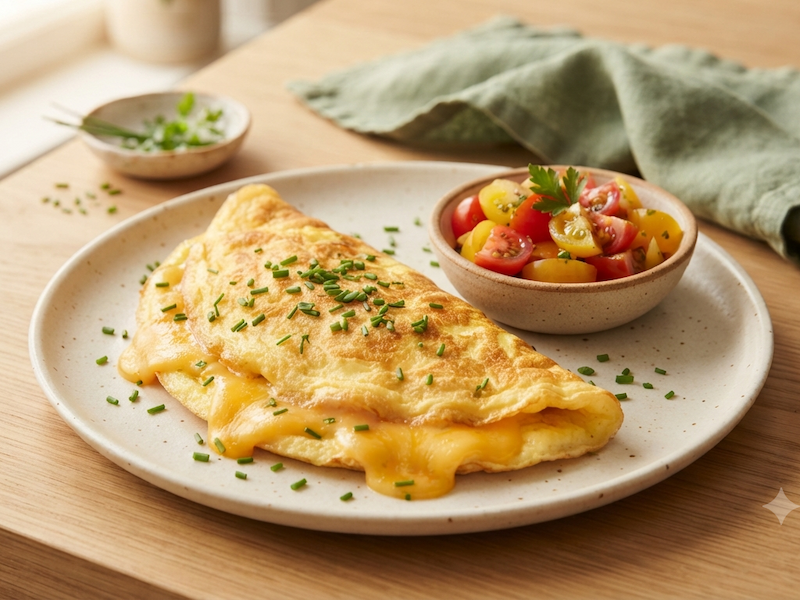
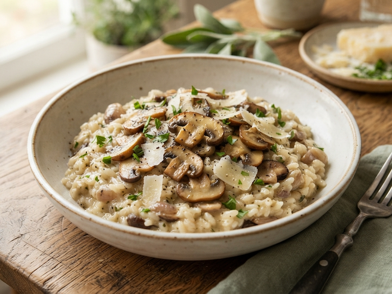

Cookies com Gotas de Chocolate
Crocante por fora, macio por dentro. Simplesmente irresistível.
- 40 minutos
- Fácil
De receitas doces a salgadas, tem sempre alguma coisa gostosa esperando por você aqui.
Crocante por fora, macio por dentro. Simplesmente irresistível.
O equilíbrio perfeito entre doce e azedinho, numa base crocante.

Leve, cremosa e com aquele toque azedinho que todo mundo ama.

Rápida, prática e recheada do seu jeito. Perfeita pra qualquer hora do dia.

Conforto em forma de sopa, pra qualquer dia frio (ou não).

Cremoso, aromático e vale cada minuto de atenção no fogão.